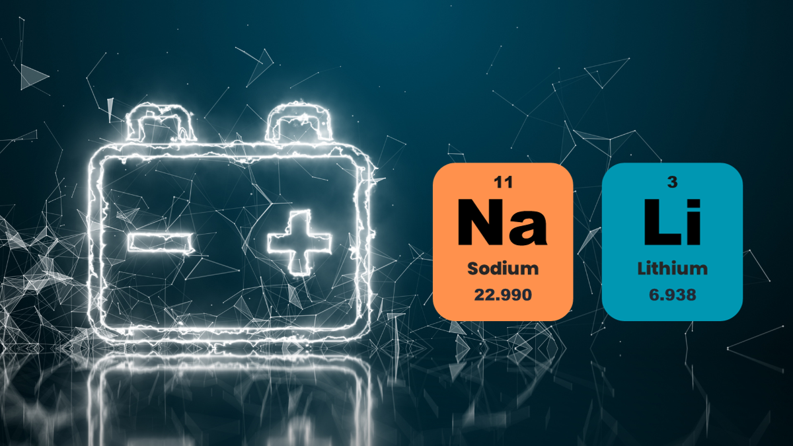
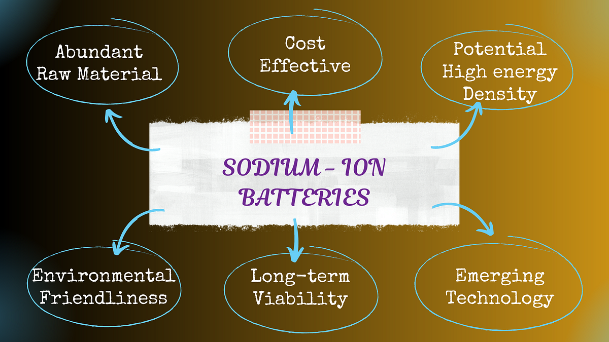

A sodium battery, also known as a sodium-ion battery, is a secondary (rechargeable) battery that mainly relies on sodium ions to move between the positive and negative electrodes to work, similar to the working principle of lithium-ion batteries.
Sodium salt, which is more readily available and less expensive than lithium salt, is the primary electrode material used in sodium-ion batteries. When weight and energy density are not necessary, sodium-ion batteries are a more affordable option than lithium-ion batteries due to their larger size.
Sodium battery advantages
Compared to lithium-ion batteries, sodium-ion batteries have the following advantages.
- When iron-manganese-nickel-based cathode materials are used instead of ternary cathode materials for lithium-ion batteries, the cost of raw materials is cut in half; sodium salt reserves are plentiful and inexpensive.
- Because of the properties of sodium salt, it is permissible to use a low-concentration electrolyte to cut costs (at the same electrolyte concentration, sodium salt conductivity is approximately 20% higher than lithium electrolyte's);
- Sodium ions do not form alloys with aluminum, so aluminum foil can be used as the negative electrode's current collector, cutting costs by approximately 8% and weight by approximately 10%;
- The sodium-ion battery can be discharged to zero volts because it does not exhibit over-discharge characteristics. Although sodium-ion batteries have an energy density of more than 100 Wh/kg, which is comparable to lithium iron phosphate batteries, they are predicted to replace conventional lead-acid batteries in large-scale energy storage due to their clear cost advantage.
The Sodium Battery Dilemma
From the current state of developing battery technology, sodium-ion batteries may cost more than lithium-ion batteries when they are first introduced because the current supply chain is still small and immature. As per reports, the energy density of sodium batteries ranges from 90 to 150 Wh/Kg on average, whereas lithium batteries have an energy density of 250 Wh/Kg. Lithium batteries have an energy density of 250 Wh/kg, which means that their weight is 400 kg. Sodium batteries have an energy density of 150 Wh/kg, which means that their weight will increase to approximately 650 kg. The analysis indicates that in terms of the specifications for lightweight passenger cars, it is unlikely to be commercialized.

Similar to lithium batteries, sodium-ion batteries have been developed for many years. Their main benefits are low cost (battery-of-materials cost is 20% lower for sodium batteries than for lithium batteries, and it can even be lower than for lithium iron phosphate), excellent performance at high and low temperatures, high safety, and fast charging times. Although it is improbable that sodium-ion batteries will surpass the current 3C and power system, experts believe there is still significant progress being made in the academic community. Nevertheless, low-speed vehicles and other unique application scenarios, like energy storage, may benefit from this technology.
That being said, there is no denying the benefits of sodium batteries and the impending problems with lithium batteries. With time and human effort, sodium batteries have greatly increased in energy density, their shortcomings have been corrected, and their benefits will become apparent, making them the superior choice over lithium batteries.
In conclusion, while sodium batteries offer compelling advantages like lower cost, better safety, and wider temperature tolerance compared to lithium-ion batteries, their current limitations in energy density make them unlikely to dethrone lithium in applications like electric passenger cars. However, their potential for cost-effective grid storage and low-speed electric vehicles remains undeniable.

As research and development efforts continue, overcoming energy density bottlenecks is not merely possible, but highly anticipated. With breakthroughs, sodium batteries could not only become a viable alternative but potentially eclipse lithium as the battery of choice for a range of applications, ultimately changing the energy landscape significantly. The future of power might not be dominated by sodium-powered passenger cars, but sodium batteries will certainly hold a powerful charge in the energy revolution.